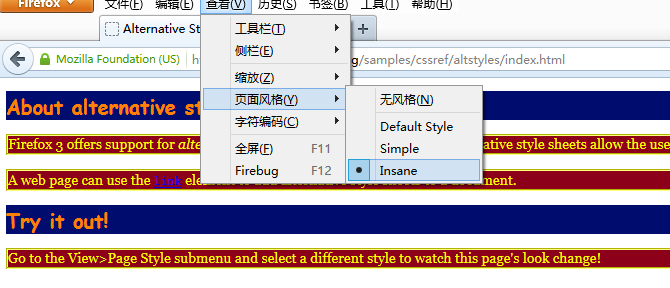
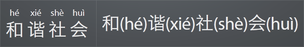

Semantic HTML
顾轶灵
从 WWW 说起
World Wide Web（Web, 万维网）
「资源的网络」
定位（URL）/ 访问（HTTP）/ 导航（超文本）
「开放」
HTML
To publish information for global distribution, one needs a universally understood language, a kind of publishing mother tongue that all computers may potentially understand.
the publishing language of the World Wide Web
HTML 可以用来...
- 发布文档 (文本, 表格, 列表, ...)
- 通过超链接获取信息
- 建立用来访问远程服务的表单
- 发布 Web 应用
万维网的「粘合剂」
Exploiting HTML

Exploiting HTML
- 「半结构化」
- 如何提取内容？
理解语义

HTML 语义
元素 + 属性 + 属性值 (+ 文档结构)
全局属性
id 属性
标示符 (用于引用)，不应依赖其语义处理相应元素
class 属性
authors are encouraged to use values that describe the nature of the content
title 属性
- 链接 - 描述目标信息
- 图片 - 版权 / 描述
- 引用 - 来源信息
- 交互元素 - 操作指南
- ...
lang 属性
内容的语言
元数据 (metadata)
head 元素
一组元数据
title 元素
文档对外的标题
窗口标题 / 历史记录 / 搜索结果标题 / ...
meta 元素
name/http-equiv/charsetname属性决定种类，content属性表示内容- 标准名称
(application-name,author,description,generator,keywords) - 扩展名称 (WHATWG Wiki MetaExtensions)
- Baidu:
mobile-agent,baiduspider - Twitter:
twitter:card,twitter:image,twitter:creator:id - Google:
application-url,google-site-verification,googlebot - 360:
renderer(未注册)
- Baidu:
链接 (links)
链接类型
-
外部资源链接
指向用来组成当前文档的外部资源，通常由 UA 自动处理
-
超链接
用来「导航」到其他资源 (可以在 UA 中打开, 下载, ...)
元素：link, a, area
link 元素
- 元数据，用来描述文档本身与其他资源的关系
- 必须包含
rel及href属性
<link rel="author license" href="/about">link + rel + author, link + rel + license 都有预定义的语义
link + rel
-
rel="stylesheet"链接到样式表 (外部资源)
-
rel="alternate"链接到当前文档的其他形式 (超链接)
<link rel="alternate" type="application/rss+xml" title="Matt Mullenweg » Feed" href="http://ma.tt/feed/" /> →
→
link + rel
-
rel="alternate stylesheet"链接到可替换的样式表 (外部资源)
 Firefox 支持快速切换样式表 (Try it in Firefox)
link + rel
-
rel="prev",rel="next"链接到文档的前一篇 / 后一篇 / 前一页 / 后一页 (超链接)
在生成站点目录、归档视图时很有帮助。
-
rel="icon"当前文档的 favicon (外部资源)
a 元素
- 存在
href属性时为超链接 - 缺少
href属性时为链接占位符
<nav>
<ul>
<li><a href="/">Home</a></li>
<li><a href="/news">News</a></li>
<li><a>Examples</a></li>
</ul>
</nav>与 link 元素不同，a 元素代表的超链接都是显式的。
a + rel
-
rel="prev",rel="next"链接到文档的前一篇 / 后一篇 / 前一页 / 后一页 (超链接)

Safari 的「阅读器」模式
a + rel
-
rel="nofollow"当前文档的作者并不推荐超链接指向的文档 (超链接标注)
由 Google 引入，他们认为适用场景有 (via)：
- 不可信赖的内容
- 付费链接
- 按优先级别进行抓取 (比如通知 Googlebot 不要抓取「注册」或「登陆」页面)
实际情况是，搜索引擎一般会抓取，但此链接一般不作为搜索结果排序的依据。
现已被 microformats 社区标准化。
rel 属性
其他在 HTML 规范中预定义的 rel 属性值及其含义参见 HTML5 草案中 Link types 一节。
区块 (sections)
article 元素
- 独立的文档、页面、应用、站点
- 可以单独发布、重用
- 可以是...
- 一篇帖子
- 一篇文章
- 一则用户评论
- 一个可交互的 widget
- ...
section 元素
- 按主题将内容分组，通常会有标题 (heading)
- 并非「语义化的
div」
何时使用？
一个简单的评判标准：当你希望这个元素的内容体现在文档的提纲 (outline) 中时，用 section 是合适的。
nav 元素
a section with navigation links
<nav>
<ul>
<li><a href="/">Home</a></li>
<li><a href="/news">News</a></li>
<li><a>Examples</a></li>
</ul>
</nav>可以帮助 UA 迅速获得导航内容，例如读屏器可以省去很多渲染直接跳到导航位置。
不一定要包含 ul，也可用自然文本进行导航。
aside 元素
- 表示与周围内容关系不太密切的内容 (eg. 广告)
- 通常表现为侧边栏内容 (eg. 相关背景内容)、引述内容
h1–h6 元素
<body>
<h1>Let's call it a draw(ing surface)</h1>
<h2>Diving in</h2>
<h2>Simple shapes</h2>
</body><body>
<h1>Let's call it a draw(ing surface)</h1>
<section>
<h1>Diving in</h1>
</section>
<section>
<h1>Simple shapes</h1>
</section>
</body>header 元素
- 一组介绍性描述或导航信息 (目录 / 搜索框 / logo / ...)
- 用来描述最近的父级区块
- 通常包含
h1–h6 - 不影响文档提纲的生成
<header>
<p>Welcome to...</p>
<h1>Voidwars!</h1>
</header>footer 元素
- 代表最近的父级区块内容的页脚
- 作者信息 / 相关文档 / 版权信息
- 不影响文档提纲的生成
<footer><!-- site footer -->
<nav>
<p>
<a href="/credits.html">Credits</a> —
<a href="/tos.html">Terms of Service</a> —
<a href="/index.html">Blog Index</a>
</p>
</nav>
<p>Copyright © 2009 Gordon Freeman</p>
</footer>address 元素
代表与最近父级 article 或整个文档关联的联系人信息
<address>
<a href="../People/Raggett/">Dave Raggett</a>,
<a href="../People/Arnaud/">Arnaud Le Hors</a>,
contact persons for the <a href="Activity">W3C HTML Activity</a>
</address>实例：MDN
分组内容 (grouping content)
p 元素
- 「段落」的显式表述
段落是主题接近的若干句子组成的文本块 (via) - 非优先考虑的选择
例如address的内容也是一个段落，但有更准确的语义
hr 元素
- 原意为「horizontal rule」(水平分隔线)
- HTML5 中重定义为不同主题内容间的分隔符
(eg. 故事场景的转换) - 区块内容之间不需要用
hr元素分隔
pre 元素
- 表示已排版的内容
- 代码片段 / ASCII art / ...
blockquote 元素
- 引用的来自其他来源的内容
cite属性表示该来源的 URL- 署名必须放在
blockquote外
<p>His next piece was the aptly named <cite>Sonnet 130</cite>:</p>
<blockquote cite="http://quotes.example.org/s/sonnet130.html">
<p>My mistress' eyes are nothing like the sun,<br>
Coral is far more red, than her lips red,<br>
[...]</p>
</blockquote>ol, ul, li 元素
- 有序 / 无序列表
- 改变列表项顺序是否影响表达
ol下li元素的value属性代表该列表项的序号值
<p>Relegation zone:</p>
<ol>
<li value="18">Bolton Wanderers</li>
<li>Blackburn Rovers</li>
<li>Wolverhampton Wanderers</li>
</ol>dl, dt, dd 元素
- 名值对的集合
- 术语定义表 / 元数据 / FAQ / ...
<dl>
<dt><dfn>happiness</dfn></dt>
<dd class="part-of-speech"><i><abbr>n.</abbr></i></dd>
<dd>The state of being happy.</dd>
<dd>Good fortune; success. <q>Oh <b>happiness</b>! It worked!</q></dd>
<dt><dfn>rejoice</dfn></dt>
<dd><i class="part-of-speech"><abbr>v.intr.</abbr></i> To be delighted oneself.</dd>
<dd><i class="part-of-speech"><abbr>v.tr.</abbr></i> To cause one to be delighted.</dd>
</dl>figure 元素
- 比较独立的、被主要内容引用的部分
- 插图 / 图表 / 照片 / 代码 / ...
- 通常会有一个标题 (
figcaption)
figcaption 元素
- 图表标题 / 图例 / 代码说明 / ...
div 元素
- 本身无语义
- 可以和
class,lang,title等属性结合，为一系列连续的内容增加语义 - 最后考虑的选择
main 元素
- 文档的主内容 / 应用的核心功能
- 唯一
- 对应于 ARIA
role="main"(定义)
<main role="main">
<!-- main content -->
</main>文本级语义 (text-level semantics)
em 元素
- 表示侧重点的强调
- 强调级别由
em的嵌套个数决定 em的位置不同，文本本身含义不同- 在可视化 UA 上一般渲染为斜体
<p><em>Bats</em> can fly.</p>
<p>Bats <em>can</em> fly.</p>
<p>Bats can <em>fly</em>.</p>strong 元素
- 表示内容的重要性
- 重要程度由
strong的嵌套个数决定 strong的位置不同，文本本身含义不变- 在可视化 UA 上一般渲染为粗体
<p><strong>Warning.</strong> A huge wave of zombies is approaching.</p>i 元素
- 不再只是「斜体」
- 表示另一种叙述方式
- 画外音 / 分类学名词 / 外来语片段 / 舞台指示 / 船名 / ...
- 建议与
class/lang属性搭配使用
<p>Sunflower (<i class="taxonomy">Helianthus annuus</i>) is an annual plant native to the Americas.</p>
<p>There is a certain <i lang="fr">je ne sais quoi</i> in the air.</p>
<p><i class="ship-name">Titanic</i> sank in the North Atlantic Ocean on 15 April 1912.</p>i 元素
Sunflower (Helianthus annuus) is an annual plant native to the Americas.
There is a certain je ne sais quoi in the air.
Titanic sank in the North Atlantic Ocean on 15 April 1912.
b 元素
- 不再只是「粗体」
- 表示某种需要引起注意却又没有其他额外语义的内容
- 摘要中的关键词 / 评介中的产品名称 / 文章的开篇内容 ...
- 建议与
class属性搭配使用
<article>
<h2>Kittens 'adopted' by pet rabbit</h2>
<p><b class="lede">Six abandoned kittens have found an unexpected new mother figure — a pet rabbit.</b></p>
<p>Veterinary nurse Melanie Humble took the three-week-old kittens to her Aberdeen home.</p>
[...]b 元素
Kittens 'adopted' by pet rabbit
Six abandoned kittens have found an unexpected new mother figure — a pet rabbit.
Veterinary nurse Melanie Humble took the three-week-old kittens to her Aberdeen home.
small 元素
- 不再只是「小字」
- fine print
- 免责声明 / 许可证声明 / 注意事项 / ...
<small><a rel="license" href="http://creativecommons.org/licenses/by-sa/3.0/">Creative Commons Attribution Share-alike license</a></small>
<small>请以实物为准，图片仅供参考</small>small 元素
请以实物为准，图片仅供参考
s 元素
- 不再只是「带删除线的文字」
- 表示不再准确或不再相关的内容
- 与
del元素含义不同
¥ <strong>76.5</strong> <s>原价79.0</s>¥ 76.5 原价79.0
u 元素
- 不再只是「带下划线的文字」
- 表示用非文本进行的标注的内容
- 中文专名 / 拼写检查的错误内容 / ...
<u class="proper-name">屈原</u>放逐，乃賦<cite class="book-name">離騒</cite>。<u class="proper-name">左丘</u>失明，厥有<cite class="book-name">國語</cite>。（司馬遷《報任安書》）屈原放逐，乃賦離騒。左丘失明，厥有國語。（司馬遷《報任安書》）
专名包括人名、地名、朝代名、国名、机构名等，大陆已较少使用，在英语中通常首字母大写
cite 元素
- 引述的作品标题
- 书 / 论文 / 散文 / 电影 / 歌曲 / 电视节目 / 画作 / ...
<p>My favorite movie is <cite>Transformers</cite> by Michael Bay.</p>q 元素
- 引用的来自其他来源的段内内容
cite属性表示该来源的 URL- 不用
q而用引号亦正确
<p>The W3C page <cite>About W3C</cite> says the W3C's
mission is <q cite="http://www.w3.org/Consortium/">To lead the
World Wide Web to its full potential by developing protocols and
guidelines that ensure long-term growth for the Web</q>.</p>abbr 元素
abbreviation or acronym
(区别？)- 其
title属性的含义为所写的全称
<p>The <abbr title="Web Hypertext Application Technology Working Group">WHATWG</abbr> started working on HTML5 in 2004.</p>建议在用户不熟悉的缩写词汇第一次出现时用 abbr + title 进行语义标注，帮助其理解
dfn 元素
- 用来展现一个术语的定义实例
- 最接近的父级段落、定义列表组或区块内容必须包含
dfn元素指定术语的定义
<p>The <dfn><abbr title="Garage Door Opener">GDO</abbr></dfn>
is a device that allows off-world teams to open the iris.</p>很容易抽取出特定术语的含义，从而很容易回答「What is ...?」类的问题
time 元素
- 为表述的内容增加一个机器可读的时间数据
datetime属性值必须是预定义的几种时间格式之一- 如果不含
datetime属性，则会解析其文本内容值
<div class="vevent">
<a class="url" href="http://www.web2con.com/">http://www.web2con.com/</a>
<span class="summary">Web 2.0 Conference</span>:
<time class="dtstart" datetime="2005-10-05">October 5</time> -
<time class="dtend" datetime="2005-10-07">7</time>,
at the <span class="location">Argent Hotel, San Francisco, CA</span>
</div>time 元素与 Microformats hCalendar 格式的配合使用code, samp, kbd 元素
code- 代码片段samp- 计算机程序的输出kbd- 用户输入的内容 / 按键
kbd 元素的样式让人一目了然mark 元素
- 在引用的文字中使用，表示在当前文档中需要引起注意但原文中并没有强调的含义 (eg. 对一篇文章的分析中对原文的标注)
- 表示与用户当前的行为相关的内容 (eg. 高亮显示搜索关键词)
<blockquote>
<p>6月13日下午，<mark>一场大雨</mark>过后，正阳门箭楼被带着水雾的脚手架包裹得严严实实。北京旧城中轴线上的这座标志性建筑，正经历着新中国成立后规模最大的一次修缮。</p>
...
<p>6月13日的<mark>那场大雨</mark>，将故宫端门外西朝房冲洗得干干净净。</p>
</blockquote>
<p>作者为什么两次提到6月13日那场大雨？请谈谈你的看法。</p>mark 元素
6月13日下午，一场大雨过后，正阳门箭楼被带着水雾的脚手架包裹得严严实实。北京旧城中轴线上的这座标志性建筑，正经历着新中国成立后规模最大的一次修缮。
...6月13日的那场大雨，将故宫端门外西朝房冲洗得干干净净。
作者为什么两次提到6月13日那场大雨？请谈谈你的看法。
ruby, rt, rp 元素
- 注音标示，「ruby」来自日本印刷业
- 主要于 CJK 文字
<ruby>和<rp>(</rp><rt>hé</rt><rp>)</rp>谐<rp>(</rp><rt>xié</rt><rp>)</rp>社<rp>(</rp><rt>shè</rt><rp>)</rp>会<rp>(</rp><rt>huì</rt><rp>)</rp></ruby>
目前 IE 5.5+ 以及 Chrome 5+ 支持
span 元素
- 本身无语义
- 可以和
class,lang等属性结合，为文本片段增加语义 - 有更合适的元素时不应选择
span
<span class="keyword">var</span> greet = <span class="function"><span class="keyword">function</span><span class="params">()</span> {</span>
console.log(<span class="string">"Hello world."</span>);
}更改记录 (edits)
ins, del 元素
- 表示对当前文档内容进行的增添与删改
cite属性指向对某个修改的说明文档的 URLdatetime属性表示了修改发生的时间 (取值规范)- 用来记录文档的编辑历史
嵌入内容 (embedded content)
img 元素
-
src,alt属性决定了图片的含义- 有
src且alt为空字符串，代表装饰用图 - 有
src且alt为非空字符串，图为文档内容的一部分 - 有
src且无alt，图为内容一部分但无等价的文本内容可用
- 有
- 用
alt文本替换图片，文档含义尽可能不变
<p>
You are standing in an open field west of a house.
<img src="house.jpeg" alt="A white houseThe house is white, with a boarded front door.">
There is a small mailbox here.
</p>iframe, embed, object, param 元素
iframe- 内嵌的浏览上下文embed- 外部应用或可交互内容的整合入口object- 通用外部资源
根据具体内容可以被处理为图片、内嵌的浏览上下文、供插件调用的资源param- 为object元素传递的参数
iframe, embed, object, param 元素
<object type="image/png" data="embed.png"></object>
<object type="text/html" data="embed.html"></object>
img 与 iframe 的效果<embed src="catgame.swf" type="application/x-shockwave-flash" quality="high">
<object data="catgame.swf" type="application/x-shockwave-flash">
<param name="quality" value="high">
<p>Plugin needed.</p>
</object>object 提供更好的回退策略多媒体元素
video- 视频audio- 音频
公共属性：src, crossorigin, preload, autoplay, mediagroup, loop, muted, controls
source 元素
- 表示所在多媒体元素的可替代资源
(可能不同格式 / 清晰度，读取失败或无法解码时可以依次尝试) type属性中除了 MIME 类型外，可使用codecs=来指定编码
<video controls autoplay>
<source src='video.mp4' type='video/mp4; codecs="avc1.42E01E, mp4a.40.2"'>
<source src='video.ogv' type='video/ogg; codecs="theora, vorbis"'>
</video>track 元素
- 用来为多媒体元素指定「文本轨」
kind属性描述文本轨的类型
可用值包括subtitles,captions,descriptions,chapters,metadata
<video src="brave.webm">
<track kind="subtitles" src="brave.en.vtt" srclang="en" label="English">
<track kind="captions" src="brave.en.hoh.vtt" srclang="en" label="English for the Hard of Hearing">
<track kind="subtitles" src="brave.fr.vtt" srclang="fr" lang="fr" label="Français">
<track kind="subtitles" src="brave.de.vtt" srclang="de" lang="de" label="Deutsch">
</video>表格数据 (tabular data)
table 元素
- 用来表示超过一维的数据
caption 元素
- 表示所处的
table的标题
当所处的 table 是外部 figure 元素的唯一子元素，应首选 figcaption
tbody, thead, tfoot 元素
- 均为一组表格行
thead表示列头 (通常为列标题，单元格用th元素)tfoot表示列脚 (通常为列数据汇总)
col, colgroup, tr 元素
列，列组，行
td, th 元素
td- 数据单元格th- 标题单元格
th 的 scope 属性表示标题对应的数据范围

进一步扩展
微格式 (Microformats)
Microformats 是 HTML 的扩展，用来标注人物 / 组织 / 事件 / 地点 / 简历 / 菜谱 / ...
很多格式已是业界的事实标准
(Microformats Wiki)
Microformats 的基本思路
用 HTML 已有的元素 / 属性，配合对属性值语义的扩展 (主要针对 class 属性) 以及对文档结构的约定来增强 HTML 的语义表达能力。Microformats 的规范本质上就是对一系列常用类型数据 HTML 格式的约定。
举例：hCard
- 用来在 Web 上发布人物 / 公司 / 组织机构信息的格式
- 和 vCard 格式 (MIME 类型：
text/vcard, RFC2426) 定义的属性名值定义一一对应
<div class="vcard">
<span class="fn">Sally Ride</span>
<div class="org">Sally Ride Science</div>
<img class="photo" src="http://example.com/sk.jpg"/>
<a class="url" href="http://sally.example.com">w</a>,
<a class="email" href="mailto:sally@example.com">e</a>
<div class="tel">+1.818.555.1212</div>
<time class="bday">1951-05-26</time> birthday
[...]
</div>其他 Microformats
微数据 (HTML Microdata)
允许在现有的文档中嵌入一组项的名值对集合
(W3C 草案)
itemscope 属性
用来标注描述项的位置
<div itemscope>
<p>My name is <span itemprop="name">Elizabeth</span>.</p>
</div>
<div itemscope>
<p>My name is <span itemprop="name">Daniel</span>.</p>
</div>name 的属性itemtype 属性
- 如果期望服用已定义的项的模式，可用
itemtype属性给出该类型的 URI - 必须与
itemscope属性置于同一元素上
itemprop 属性
当前项的属性名
itemid 属性
当前项的全局 ID (eg. ISBN)
<dl itemscope itemtype="http://vocab.example.net/book" itemid="urn:isbn:0-330-34032-8">
<dt>Title</dt>
<dd itemprop="title">The Reality Dysfunction</dd>
<dt>Author</dt>
<dd itemprop="author">Peter F. Hamilton</dd>
<dt>Publication date</dt>
<dd><time itemprop="pubdate" datetime="1996-01-26">26 January 1996</time></dd>
</dl>属性取值
情况复杂，根据元素类型不同，取值方式各有不同
具体请参考 Microdata 规范草案
实例

参考文档
- HTML 4.01 Specification, W3C.
- HTML5 Editor's Draft, W3C.
- MetaExtensions, WHATWG Wiki.
- Microformats Wiki, Microformats community.
- HTML Microdata Editor's Draft, W3C.
- Semantics in HTML 5, A List Apart.
- Semantics - Dive Into HTML5, Dive Into HTML5.
- schemas.org.
- HTML5 Doctor.